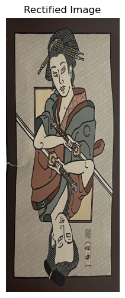

Overview
In this assignment, we will get our hands dirty in different aspects of image warping with a “cool” application
-- image mosaicing. We will take photographs and create an image mosaic by registering, projective warping,
resampling, and compositing them.
Part I - Section I: Shoot the Pictures
First, lets gather some photographs to use and define some correspondence points.
|
City Skyline - Image 1
|
City Skyline - Image 2
|
City Skyline - Image 3
|
|
Poster
|
 Digital Scan
Digital Scan
|
Part I - Section II: Recover Homographies
Now that we have our images and correspondence points, we can compute the homography transformation. Here, we have
a set of points in image 1 that correpond to image 2. Using these points, we can define a system of equations to
solve for the coefficients of our homography matrix H. Note that since H is a 3x3 matrix with 8 degrees of
freedom (lower right corner is a scaling factor and can be set to 1), we need at least 4 correspondence points per
image.
\[
\begin{pmatrix}
x1 & y1 & 1 & 0 & 0 & 0 & -x1*x1' & -y1*x1'\\
0 & 0 & 0 & x1 & y1 & 1 & -x1*y1' & -y1*y1'\\
x2 & y2 & 1 & 0 & 0 & 0 & -x2*x2' & -y2*x2'\\
0 & 0 & 0 & x2 & y2 & 1 & -x2*y2' & -y2*y2'\\
& & & & : \\
\end{pmatrix}
\begin{pmatrix}
h1 \\
h2 \\
h3 \\
h4 \\
h5 \\
h6 \\
h7 \\
h8 \\
\end{pmatrix}
=
\begin{pmatrix}
x1' \\
y1' \\
x2' \\
y2' \\
: \\
\end{pmatrix}
\]
Here, x1 and y1 present the first correspondence points for the first image and x1' and y1' represent
the first correspdence points of the second image. Every subsequent set of correspondence points will add
two lines to the matrix, so we need 4 correspondences for 8 entries in the matrix to complete the system.
We can use least-squares to approximate a solution if the system contains many correspondence points. Once
we compute the unknown variables h1 through h8, we can construct our H matrix.
\[
H
=
\begin{pmatrix}
h1 & h2 & h3 \\
h4 & h5 & h6 \\
h7 & h8 & 1 \\
\end{pmatrix}
\]
The last entry can be 1 since we only need 8 degrees of freedom.
Part I - Section III: Warp the Images
Once we have the homography H, we can use it to project one image onto another image. We first define the shape of
our output image and with this we can use the homography to map the pixel coordinates of the output image to the
input image while removing coordinates outside the bounding box of the input image or have no values (invalid pixels). Next, we
interpolate over the valid pixels and set the pixel of output image to the interpolated value at any particular pixel location.
Part I - Section IV: Image Rectification
Now that we can compute homographies and warp images, we can rectify images. To rectify an image, we first need to
define 4 points on an input which is the section we want to rectify. Next, we define the size of our output image
and likewise define 4 points (a rectangle) which we will warp our input image to. We compute the homography
between these sets of 4 correspdence points then use that homography to rectify the input image.
|
Poster
|

Rectifed Poster
|
|
Digital Scan
|
Rectifed Table
|
Part I - Section V: Image Mosaicing
In this section, we can warp together multiple images to create an image mosaic. First, we select an image to be
our reference image that we will warp the other images to. Next, using the correspondence points, we compute the
homographies to warp each image to the reference image, so the reference image's homography matrix H is just an
identity matrix. Then for each image, compute a "distance-to-zero" metric to create a mask of the image. Then using
this mask, we will create gaussian pyramid for the mask and a laplacian pyramid for the images to blend all of them
together smoothly.
|
City Skyline - Image 1
|
City Skyline - Image 2
|
City Skyline - Image 3
|
Here are visualizations for the distance transform.
|
Ocean - Image 1
|
Ocean - Image 2
|
 Woods - Image 1
Woods - Image 1
|
 Woods - Image 2
Woods - Image 2
|
 Woods - Image 3
Woods - Image 3
|
Part II - Section I: Harris Interest Point Detector
Since we are not longer manually picking correspondence points, the first step in automating the process
is to generate Harris corners, or to infer the features of an image. By running the sample code, we can get
a collection of these points that will reprsent the corner strength at that location in the image. We may also discard points
that are close the boundaries of the image.
These are all the points of interest
we get for this image we have used previously.
|
Harris Corners Visualized
|
Part II - Section II: Adaptive Non-Maximal Suppression
As we can see, the Harris Corner algorithm by itself both gives us keypoints that are not reliable and also
too many points that we cannot realistically process and get good results. We can implement Adaptive Non-Maximal Suppression
to reduce the number of points to only points that are indicative of reliable "strong" corners/points in the
image as well as giving us an evenly spaced collection of points. We initialize a "radius" value that starts
at infinity that we will decrease until we reach the desired number of points. We will iterate through all the harris corners
and update this radius value according to this update rule:
$$\begin{aligned}
r_i = min_j |x_i - x_j|, s.t. f(x_i) < c_{robust}f(x_j),x_j\in {Keypoints}
\end{aligned}$$
At the end, we will have indices of all the updated radii. We will sort all of these indices and use this to
select our keypoints from the original collection. Here, we may also define a maximum number of points to select.
Part II - Section III: Extracting Feature Descriptors
Now that we have a workable collection of keypoints, we can define a feature description associated with
each point. We first take a 40 pixel by 40 pixel patch around each keypoint if it the whole patch is within
the boundaries of the image, we will then downsample the patch into an 8 pixel by 8 pixel patch. Lastly,
we will normalize the gain and bias.
|
Some feature descriptor patches
|
Part II - Section IV: Matching Feature Descriptors
Now that we have our keypoints and a metric we can use to determine similarity, we can start matching keypoints
between images to get a collcetion of correspdence points similar to as if we were to manually select them. Given a list of
feature descriptors per image, we will compute a distance matix between these descriptors. We will loop through the number of
descriptors and for each i-th descriptor in one list, we will get the indices of the first and second nearest neighbors. We will
compute the ratio betwen these distances and if this ratio is below a defined threshold, we will consider the first nearest
neighbor as a match and will correspond.
|
Matched feature descriptors
|
Part II - Section V: RANSAC
With this matching technique, there may be cases where points are incorrectly matched. We can use a technique called RANSAC to
filter out incorrect correspondence points. First, we will randomly select a minimal subset of points required to estimate a
"best" homography, which is 4 in this case. We will then compute a homography from this subset. Using this computed homography,
we wil project the source points and compute the distances between the projected points and the destination points. We can determine
the number of points from the full set that agree with this homography that is within a certain threshold, or inliers. If the
number of inliers is the best we have seen, we will consider this H to be the best estimated homography. We will repeat these steps
for a fixed number of iterations until we get a good estimated homography.
|
Matched feature descriptors after RANSAC
|
We now how the full pipeline to autostitch images together from generating our correspondence points and computing the homographies
to warp these images. We can just use the functions we defined previously, but include RANSAC when computing homographies.
|
Ocean - Image 1
|
Ocean - Image 2
|
|
Class - Image 1
|
Class - Image 2
|